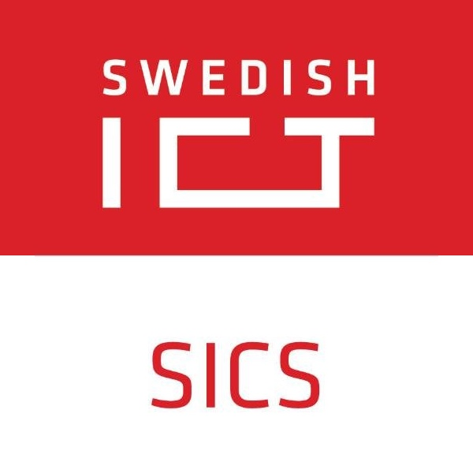
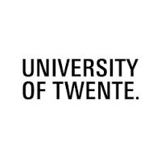

Some placeholder stuff
Work Experience Education
Work Experience & Education
Experienced Developer
Spotify
Oct 2016 - PresentMSc. Data Intensive Computing
KTH Royal Institute of Technology
Master thesis graded A

Intern
SICS Swedish ICT
Nov 2015 - June 2016MSc. Distributed Systems & Services
Technische Universität Berlin
Oct 2014 - Oct 2015Backend developer
Gambify GmbH
Feb 2015 - July 2015
BSc. Computer Science
University of Twente
Best paper award for bachelor thesis
Also completed Excellence Stream Mathematics
Bachelor thesis graded 9/10